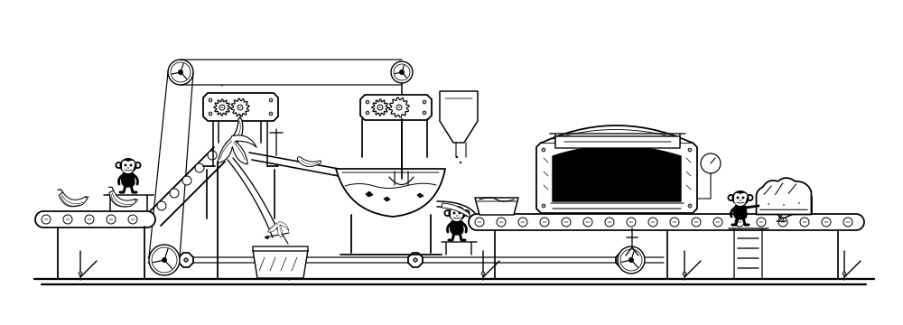
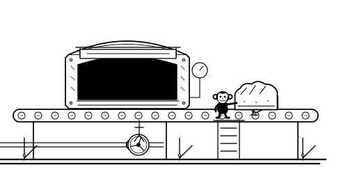

Side-by-side overview.
Images here fit the available space. Fixed-size specimens below do not shrink.


1440px desktop panels.
Each fixed panel contains a 1320px-wide illustration. Each worker remains approximately 53px tall. Scroll horizontally at 100% browser zoom to inspect the two panels without automatic scaling.
375px mobile panels.
Both contain 335px illustrations and retain approximately 27px workers. The outlined controls are static placement studies.

Pause / playApprove loaf

Pause / playApprove loaf
Versions preserved.
Historical coloured versions remain archived; no colour is reintroduced to the current drawing.